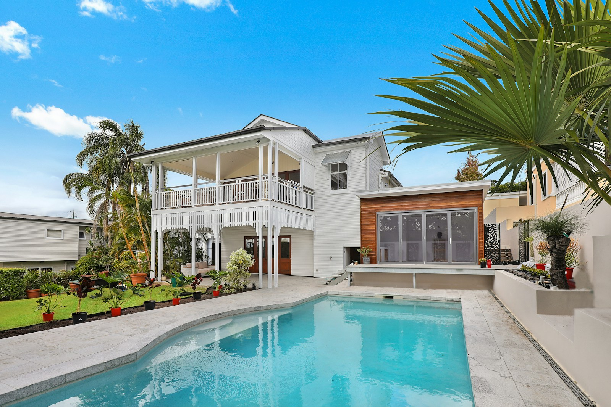

draftmango studio — architecture and interiors, Hudson, New York
- Est. 2009
- Hudson & BrooklynHudson, NY & Brooklyn
- Architecture & Interiors
- Taking commissions for 2027


01 / The Studio
We design quiet buildings that get better with use.
- Completed buildings
- 140
- Years of practice
- 17
- Regional design awards
- 11
A practice in Hudson and Brooklyn with nine registered architects. Houses, civic buildings and old structures given a second life, across the Northeast since 2009. — Clara Weiss & Jonah Reyes, Partners
02 / Selected Work
Six recent buildings
-
01
Saltbox House
Hudson Valley, NY
House
2024

-
02
Kiln Library
Beacon, NY
Civic
2023
-
03
Granary Hall
Kingston, NY
Adaptive Reuse
2025

-
04
Larch Row
Brooklyn, NY
Housing, 18 Homes
2022
-
05
Ridge Studio
Catskills, NY
Artist Studio
2025
-
06
Meadow School
Rhinebeck, NY
Civic
2026
03 / Featured Project
Granary Hall
A 1904 grain store on the Rondout, kept for its timber frame and its light. The bins became a reading room, the loading dock a café, the upper floor twelve studios for rent.


04 / Services
From a first study to the last detail
Take one service or all five. Every project is led by a partner from the first site visit to handover.
New buildings from the ground up, drawn around the site, the light and the way you will live or work in them.
- Site and zoning study
- Concept models and drawings
- Permit and construction set

Interiors drawn with the building, not after it: built-in joinery, lighting and a short list of honest materials.
- Material and finish palette
- Joinery and lighting drawings
- Furniture and fixture schedule
Old structures kept and given a new use. We survey what is there, keep what is worth keeping and add only what is missing.
- Measured survey of the building
- Structure and envelope review
- Historic tax credit support
A plan for a whole site over ten or twenty years: where buildings go, how people move between them and what gets built first.
- Site analysis and capacity
- Phasing plan
- Design guidelines
Three to four weeks to learn what a site or a building can hold, what the code allows and roughly what it will cost.
- Zoning and code summary
- Two massing options
- Order-of-magnitude cost
05 / Process
Five phases, one drawing set
A typical house runs about six months from brief to permit. Construction follows at the builder's pace.
-
01 · Weeks 1–3
Brief & Site
- Site visit and survey
- Zoning and code review
- Written brief and budget
-
02 · Weeks 4–9
Concept
- Massing models
- Two or three options
- First cost check
-
03 · Weeks 10–16
Developed Design
- Plans, sections, elevations
- Materials and samples
- Engineers coordinated
-
04 · Weeks 17–26
Permits & Documents
- Permit set and filing
- Construction drawings
- Bid package for builders
-
05 · To Handover
Construction Administration
- Weekly site visits
- Shop drawing review
- Punch list and handover
06 / Studio
Twenty-four people, one long table
Architects, interior designers and two model makers, in a former print works on Warren Street.

07 / Recognition
As Featured In

09 / Start a Conversation
Tell us about the site.
A partner reads every enquiry and replies within two working days. Tell us where the site is and when you hope to build.